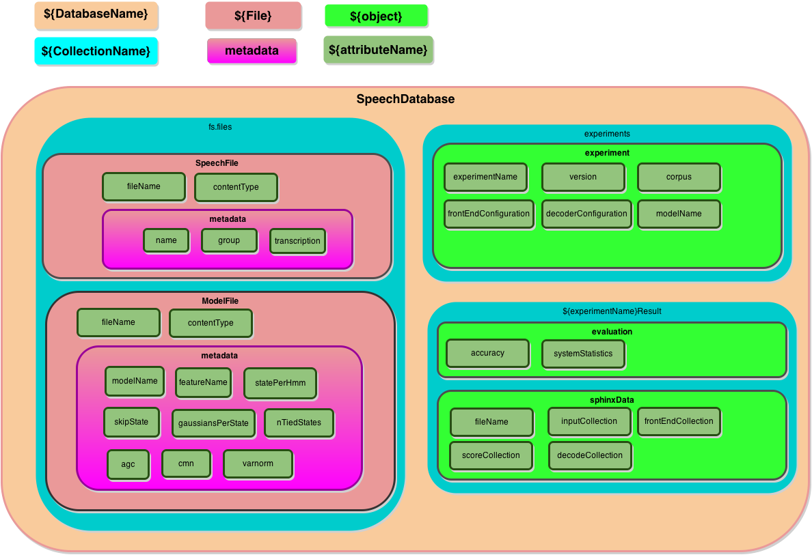

Purpose Ο Γιαννης θελει ελληνικα.
Using MongoDB as the persistence layer. MongoDB is the easiest way to get things up and working. It requires to import all data like the speech database, trained models along with their dictionaries and model definitions.
Storing the speech database
MongoDB offers a place to store files in a binary form using the GridFS class, the files are stored in the collection fs.files. The schema spesifies the metadata stored along with the files. Importing the data to the database can be done either using the … or with a custom script written in a language supported by mongoDB. The database schema has to be preserved, though.
Usage
In order to use this module you need to have a mongoDB instance up and running. Best way of starting a mongoDB instance is to use the docker platform. An example of using Sphinx4soc with mongoDB and docker take a look at the input-mongodb App.
Schema
